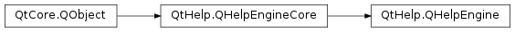

QHelpEngine¶
Synopsis¶
Functions¶
- def
contentModel() - def
contentWidget() - def
indexModel() - def
indexWidget() - def
searchEngine()
Detailed Description¶
ThePySide2.QtHelp.QHelpEngineclass provides access to contents and indices of the help engine.
-
class
PySide2.QtHelp.QHelpEngine(collectionFile[, parent=nullptr])¶ Parameters: - collectionFile – unicode
- parent –
PySide2.QtCore.QObject
Constructs a new help engine with the given
parent. The help engine uses the information stored in thecollectionFilefor providing help. If the collection file does not already exist, it will be created.
-
PySide2.QtHelp.QHelpEngine.contentModel()¶ Return type: PySide2.QtHelp.QHelpContentModelReturns the content model.
-
PySide2.QtHelp.QHelpEngine.contentWidget()¶ Return type: PySide2.QtHelp.QHelpContentWidgetReturns the content widget.
-
PySide2.QtHelp.QHelpEngine.indexModel()¶ Return type: PySide2.QtHelp.QHelpIndexModelReturns the index model.
-
PySide2.QtHelp.QHelpEngine.indexWidget()¶ Return type: PySide2.QtHelp.QHelpIndexWidgetReturns the index widget.
-
PySide2.QtHelp.QHelpEngine.searchEngine()¶ Return type: PySide2.QtHelp.QHelpSearchEngineReturns the default search engine.
© 2018 The Qt Company Ltd. Documentation contributions included herein are the copyrights of their respective owners. The documentation provided herein is licensed under the terms of the GNU Free Documentation License version 1.3 as published by the Free Software Foundation. Qt and respective logos are trademarks of The Qt Company Ltd. in Finland and/or other countries worldwide. All other trademarks are property of their respective owners.